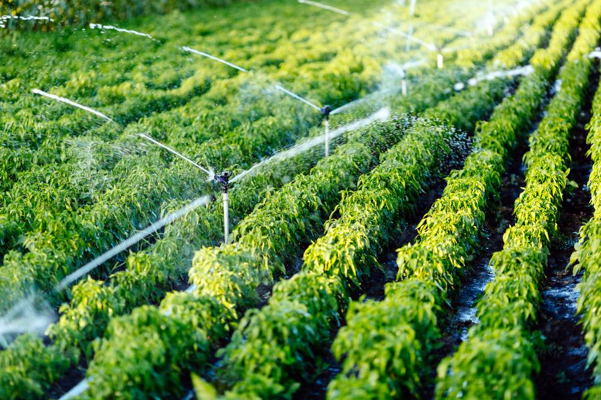
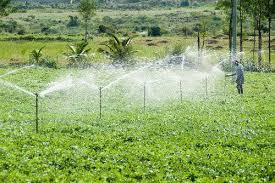
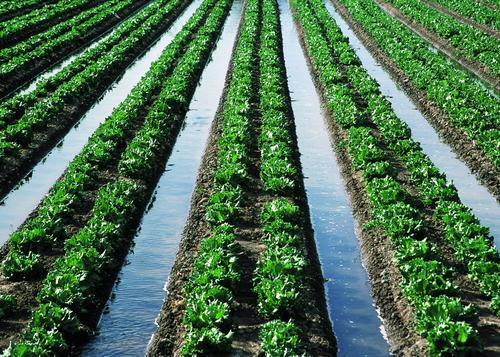
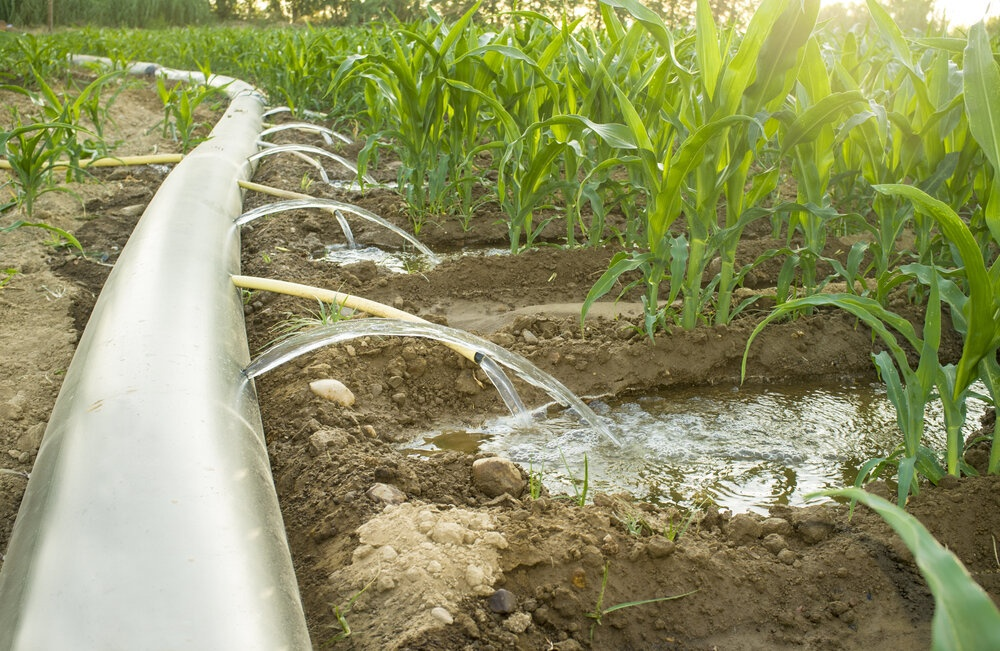
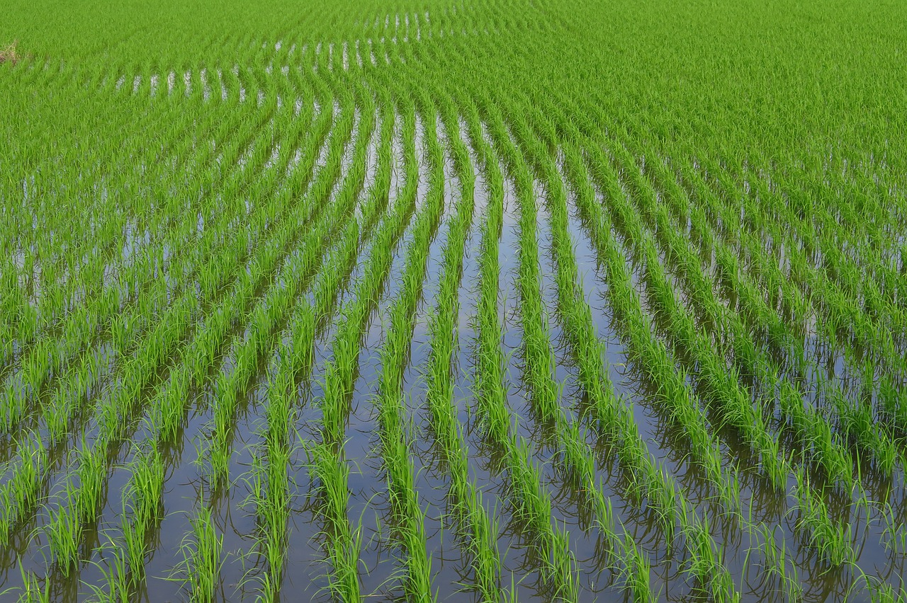
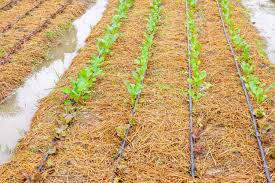
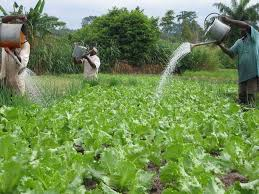

Best Suited For:
High-value crops: Fruits (grapes, strawberries, pomegranates), Vegetables (tomatoes, cucumbers, onions), Flowers.
Benefits:
- Highly water-efficient with minimal evaporation.
- Prevents weed growth by targeting only plant roots.
- Reduces fungal diseases as leaves remain dry.
- Precise delivery of water and nutrients (fertigation).

Best Suited For:
Cereals (wheat, maize, barley), Pulses (chickpeas, lentils), Grasslands, Lawns.
Benefits:
- Even water distribution.
- Suitable for sandy soils and irregular terrains.
- Reduces soil erosion and salinity issues.

Best Suited For:
Rice, Sugarcane, and Pulses in paddy fields.
Benefits:
- Simple, traditional, and inexpensive.
- Effective for water-tolerant crops like rice.
- Does not require sophisticated infrastructure.

Best Suited For:
Row Crops: Cotton, Sugar Beets, Vegetables (potatoes, carrots).
Benefits:
- Cost-effective and easy to implement.
- Reduces water contact with foliage, minimizing diseases.
- Suitable for medium-textured soils.

Best Suited For:
Orchards (mango, citrus), Coconut, Banana, and Rice.
Benefits:
- Retains water directly around roots.
- Reduces runoff and deep percolation losses.
- Ideal for perennial crops and clay soils.

Best Suited For:
High-value crops: Vegetables, Vineyards, Cotton.
Benefits:
- Extremely water-efficient with no evaporation losses.
- Encourages deep root growth for plant stability.
- Reduces weed growth and surface runoff.

Best Suited For:
Small-scale farms, home gardens, horticulture, and potted plants.
Benefits:
- Low cost and requires no advanced technology.
- Complete control over water application.
- Ideal for areas where labor is affordable and water availability is inconsistent.